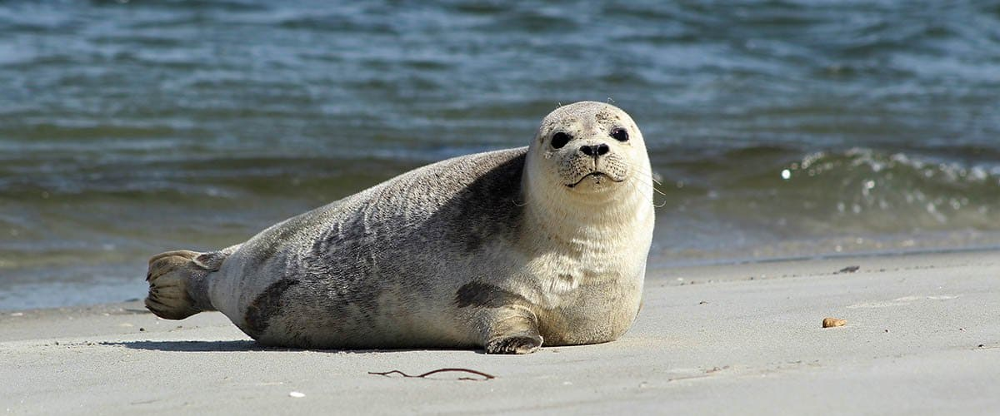

All About Seals

Welcome! This is a site dedicated to facts about the Atlantic harbor seal and its cousins!
Atlantic harbor seals are found in Artic and temperate waters on the eastern coast of North America.
They are one of the most prevalent species of seal one can find today! Atlantic harbor seals are one of
four subspecies of harbor seals, the other three being the Pacific harbor seal, the Ungava harbor Seal
found in Northern Canada, and the insular harbor seal of East Asia. Harbor seals can live for up to forty years in captivity and can breed throughout their lives. Their favorite foods include
squid, herring, and capelin. Capelin are particularly important to harbor seals as they contain fresh
water that seals cannot access elsewhere. They are also known to follow after fishing boats to eat whatever
fishermen toss overboard. Sometimes, they will raid lobster traps- usually to go after the bait rather than
the lobsters inside.
Harbor seal-watching is a popular hobby in Long Island Sound in
the winter months. Harbor seals travel from Northern waters to Long Island Sound in November-December and
remain there until mid March-April. They will then travel to the coast of Maine to mate and pup. A seal
mother has a pup each Spring, which can swim very shortly after birth. For harbor seals, the pup's baby
coat is often molted completely or partially before birth. Baby harbor seals can nurse in the water as well as on land and
will be weaned at 4-6 weeks of age. The mother seals will mate again after this happens, as well as molt
after the pupping season ends.
Harbor seals are most often seen by people when they "haul out" onto rocks or other pieces of land
to sun themselves. They will often lift their head and rear flippers up into a bananna pose. Seals will rest
in the water in an upright position with their heads poking through the surface. This post is sometimes called
bottling. It takes a while for one's eyes to become accustomed finding seals heads poking out of the water, due
to their dark fur being very good camouflage. A seal can dive very deep. Reports of maximum diving ability
range from 600ft to 1500 feet in depth. They can hold their breaths for thiry minutes. However, seals usually
do not need to dive so deep, as fish can be found in shallower waters. Harbor seals also tend to be very social,
the often swim or bask alone or in small groups. They can also form large groups on land. However, seals are very
shy and will slip back into the water if they sense danger. They need quiet beaches to raise their pups.
Be sure to explore to find more fun facts
about harbor seals, other species of seals, and what you can do to protect seals worldwide.